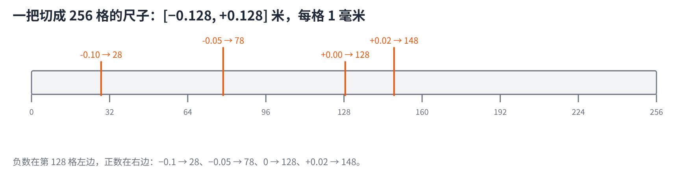
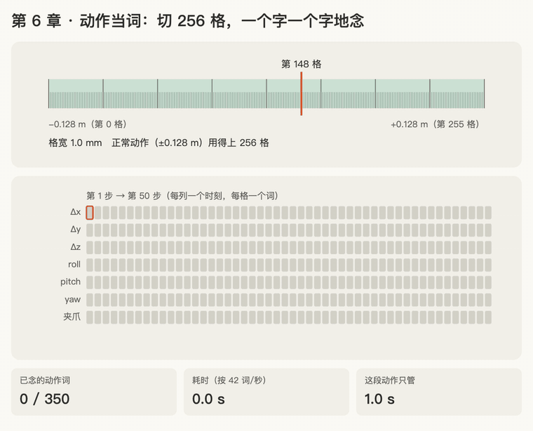

第 6 章 · 动作当词：把每个数切成 256 格（RT-2 / OpenVLA）
本地运行
git clone https://github.com/wikieden/vla-from-scratch
cd vla-from-scratch/code/notebooks
pip install jupyterlab torch numpy
jupyter lab ch06_action_tokens.ipynb也可以下载后直接用 VS Code 打开 .ipynb 运行。需要 GPU 的章节在 Colab 里选「代码执行程序 → 更改运行时类型 → GPU」。
本章回答：VLM 只会输出文字 token，怎么让它输出动作？
讲解日期：2026-11-04 · 上一章：第 5 章 VLM · 下一章：第 7 章 FAST
对应原文：materials/text/papers/rt2-2307.15818.txtL268–L292（每维 256 格、动作说成一句话）；openvla-2406.09246.txtL248–L259（1%–99% 分位数、覆盖最少用的 256 个词）、L338（4090 约 6 Hz）
本章缩写：RT-2 = Robotics Transformer 2；OpenVLA = 开源 VLA；OFT = Optimized Fine-Tuning（优化 / 微调）；FAST = Frequency-space Action Sequence Tokenization（频率空间 / 动作序列 / 分词）；GPU = Graphics Processing Unit（图形 / 处理 / 单元）。全表见 appendix-glossary.md
讲解
第 1 步：连续的数 → 格子编号 → 词
问题：VLM 每一步输出的是"词表里的某个词"（一个 token）。动作是 0.02、−0.013 这样的连续小数，词表里没有。
办法：分箱（binning）
白话类比：尺子上的刻度
把一把尺子分成 256 个刻度。不管你量到 2.03 厘米还是 2.07 厘米，都记成"最接近的那个刻度号"。小数变成了 0–255 的整数编号。
RT-2 的做法（materials/text/papers/rt2-2307.15818.txt 第 268–292 行）：
- 动作的每一维各自切成 256 个等宽的格子（bin）；
- 每一维记成它落进的格子编号（0–255 的整数）；
- 把这几个整数用空格连成一句"话"，例如 "1 128 91 241 5 101 127"，让 VLM 像回答问题一样把它"说"出来；
- 训练方法就是普通的"猜下一个词"。
OpenVLA 同样切 256 格，有两处小改进（openvla-2406.09246.txt 第 248–256 行）：
- 格子的范围取训练数据里第 1% 到第 99% 的动作值，而不是最小值到最大值，避免几个异常大的动作把格子撑得太粗；
- Llama 的词表里没有现成的 256 个数字词，于是把最少用的 256 个词改成动作词（原文 "overwriting the 256 least used tokens"，第 259 行）。
顺带解决了第 4 章的多峰问题：模型输出的是"256 个格子各自的概率"，左边格子和右边格子可以同时概率高，抽一个就行，不会被平均到中间。

图 6-1 · 负数在 128 左边，正数在右边。
场景代码：OpenVLA 的真实分箱写法（materials/code/openvla-oft/repo/prismatic/vla/action_tokenizer.py L28–L46，节选）：
self.bins = np.linspace(min_action, max_action, self.n_bins) # 256 个刻度，范围已归一化到 [-1, 1]
action = np.clip(action, a_min=float(self.min_action), a_max=float(self.max_action))
discretized_action = np.digitize(action, self.bins) # 落在第几格（1..256）
return self.tokenizer.decode(list(self.tokenizer.vocab_size - discretized_action)) # 用词表最后 256 个词
第 2 步：代价是"一个字一个字地念"，太慢
VLM 输出词的方式是自回归：说完一个词，才能说下一个（每个词都要把整个大模型跑一遍）。一个 7 维动作 = 7 个动作词，就要跑 7 遍。
白话类比：报电话号码。你要把 7 位号码一位一位念出来，念完一位才能念下一位。如果一次要报 50 个号码（一个 chunk），就要念 350 位。
实测：OpenVLA（7B）在一张 RTX 4090 上只能跑到约 6 Hz（openvla-2406.09246.txt 第 338 行："6Hz on one NVIDIA RTX 4090 GPU"），而且这还是一次只出 1 个动作（不分块）。π0 这类模型要的是 50 Hz。
解决思路有两条，就是接下来两章：
| 思路 | 做法 | 在哪讲 |
|---|---|---|
| 少念几个字 | 先把一整段动作压缩，再变成更少的词 | 第 7 章 FAST |
| 不一个字一个字念 | 一次并行吐出所有动作（OpenVLA-OFT），或者干脆不用词、接一个连续动作头（π0） | 第 8 章 |
图 6-2 · 范围被 +1.0 撑开后，正常动作只用得上 58 格。
动画演示：分箱与逐词念：256 格、350 个词

可交互版：animations/06-binning-autoregressive.html（用浏览器打开，可播放、单步、换随机数重来）。
怎么看：
- 上面是一把切成 256 格的尺子，橙线是当前 Δx 落在第几格。播放时 Δx 从负到正扫过：负数在 128 左边，正数在右边（第 1 题重做部分）。
- 中途加入一个 +1.0 m 的异常值：格宽从 1 mm 变成约 4.4 mm，正常动作只用得上浅绿那 58 格（第 1 题第 3 问）。
- 下面 350 个小方块 = 一个 50 步 × 7 维 chunk 的动作词，一个念完才能念下一个。按每秒 42 个词，计时变红停在 8.3 秒，而这段动作只管 1 秒（第 2 题）。
练习与作答记录
题 1：假设 Δx 的范围是 −0.128 米到 +0.128 米，切成 256 格。 1. 每一格多宽？（换算成毫米） 2. 第 0 格从 −0.128 开始。Δx = 0（不动）落在第几格？Δx = +0.02 米（往前 2 厘米）落在第几格？ 3. 如果某条示范里有一个异常动作 Δx = +1.0 米，用"最小值到最大值"来定范围，格子会变成多宽？这对精细动作有什么坏处？
作答（2026-11-04，原话）：1=1毫米，2=128，130，3=8-9mm，精度回变低 ◐
点评： 1. ✅ 1 毫米：总宽 0.256 米 ÷ 256 = 0.001 米 = 1 毫米。 2. ✅ Δx = 0 → 第 128 格（离 −0.128 有 128 毫米，每格 1 毫米）。 ❌ Δx = +0.02 → 应该是第 148 格，不是 130。0.02 米 = 20 毫米（不是 2 毫米），离 −0.128 的距离是 128 + 20 = 148 毫米 → 第 148 格。错在米和毫米的换算：0.02 米 = 2 厘米 = 20 毫米。 3. ❌ 范围从 −0.128 到 +1.0，总宽 1.128 米 ÷ 256 ≈ 4.4 毫米一格。8–9 毫米像是按 −1.0 到 +1.0（总宽 2 米）算的，但最小值仍是 −0.128，只有最大值被撑到 1.0。 ✅ 结论"精度变低"对。更直观的说法：正常动作只在 −0.128 到 +0.128 之间，只用得上 0.256 ÷ 0.0044 ≈ 58 格，其余 198 格几乎全浪费在那一个异常值上。所以 OpenVLA 改用第 1%–99% 分位数定范围。
重做（题 2 后半）：Δx = −0.05 米（往后 5 厘米）在 1 毫米一格的设置下落在第几格？
重做作答（2026-11-04，原话）：178 ✗
点评：毫米换算这次对了（0.05 米 = 50 毫米），但方向反了。−0.05 是往后，比"不动"（第 128 格）少 50 格：128 − 50 = 78。用公式验算：(−0.05 − (−0.128)) ÷ 0.001 = 0.078 ÷ 0.001 = 78。减去一个负数等于加上它的绝对值，所以是 0.128 − 0.05，不是 0.128 + 0.05。
画成数轴就不会错：
−0.128 −0.05 0 +0.02 +0.128
格 0 格 78 格 128 格 148 格 256
|─────────────|─────────────|─────────────|─────────────|
← 往后 往前 →
再做一道：Δx = −0.1 米落在第几格？先说它在 128 的左边还是右边，再算。
作答（2026-11-04，原话）：28，在左边 ✓
点评：对。负数在左边，128 − 100 = 28。正负方向这次掌握了。
题 2：OpenVLA 约 6 Hz，每个动作 7 个词，所以大约每秒能念 6 × 7 = 42 个动作词。 1. 如果要像 π0 一样一次出 50 步、每步 7 维的 chunk，要念多少个词？大约要多少秒？ 2. 这样能支撑 50 Hz 控制吗？
作答（2026-11-04，原话）：要350个词，这需要8.x秒，这样无法支撑50hz的控制 ✓
点评：对。50 × 7 = 350 个词，350 ÷ 42 ≈ 8.3 秒。而这一段只管 1 秒的动作：想 8 秒、走 1 秒，机器人大部分时间在发呆，完全撑不住 50 Hz。这就是"够不够快"这个贯穿问题在离散 token 路线上的样子。
口诀
尺子切 256 格，小数变编号，编号当词说出来；
一个字一个字地念，念得太慢。
本章复习卡片
V12 分箱的格宽与格号怎么算、为什么用分位数、V13 逐词输出为什么慢（见 review.md）
附录 · 延伸阅读
留给以后深入学习用，不影响本章主线。★ 是建议先读的。
推荐阅读
| 读什么 | 读哪里 | 读它为了什么 |
|---|---|---|
| ★ RT-2 §3 | rt2-2307.15818.txt L268–L292 |
动作变成一句话 |
| ★ OpenVLA §3 | openvla-2406.09246.txt L248–L259、L338 |
分位数定范围、覆盖最少用的词、6 Hz |
| OpenVLA 分箱代码 | openvla-oft/repo/prismatic/vla/action_tokenizer.py |
np.digitize 的真实写法 |
| 第 7 章 FAST、第 15 章 OFT | 少念几个字 / 不逐字念 | 本章两个问题的解法 |
数学原理
- 均匀分箱：格宽 = (最大 − 最小) / 格数；格号 = ⌊(x − 最小) / 格宽⌋。
- 分位数：q% 分位数是"有 q% 的数比它小"的那个值。
公式清单
| 公式 | 意思 |
|---|---|
| 格宽 \(= (hi - lo)/256\) | 每格多宽 |
| 格号 \(= \lfloor (x - lo)/\text{格宽} \rfloor\) | 连续值落在第几格 |
| 用时 \(=\) chunk × 维数 / 每秒词数 | 逐词念完一段要多久 |
代码对照：把本章的数字用代码算一遍
纯 Python + NumPy，不需要 GPU。代码在仓库本地
vla-deep-dive/solutions/chapter-code/ch06_action_tokens.py，配套测试tests/test_ch06.py：
bash cd vla-deep-dive/solutions/chapter-code uv run python ch06_action_tokens.py uv run pytest tests/test_ch06.py
讲义 ↔ 代码：
| 讲义 | 写法 | 跑出来 |
|---|---|---|
| 第 1 步 | bin_width、to_bin |
1 毫米；0 → 128、+0.02 → 148、−0.05 → 78、−0.1 → 28 |
| 第 1 步 | bin_width(−0.128, 1.0)、quantile_range |
4.4 毫米、58 格；分位数范围不被异常值撑大 |
| 第 2 步 | decode_time(50, 7, 42) |
8.3 秒 |
代码里才看得到的 2 件事：
to_bin先 round 再 floor：0.02 / 0.001 在浮点里是 147.99999…，不 round 会落到 147。- OpenVLA 真实代码用
np.digitize和 256 个刻度，返回 1–256，和这里 0–255 的约定差 1（源码注释里专门说明了这一点）。
自己改一改（不影响练习答案）：
- 把格数改成 64，看每格多宽、精度掉多少。
- 给
quantile_range换成 5%–95%，看范围怎么变。